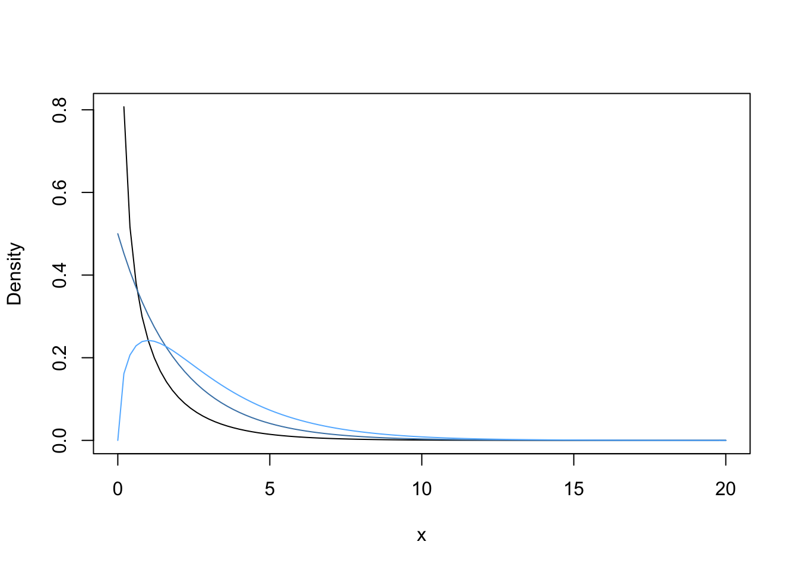
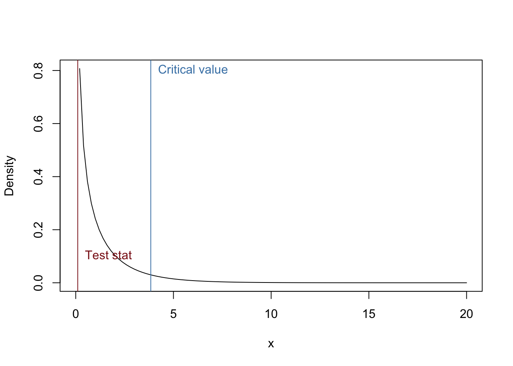
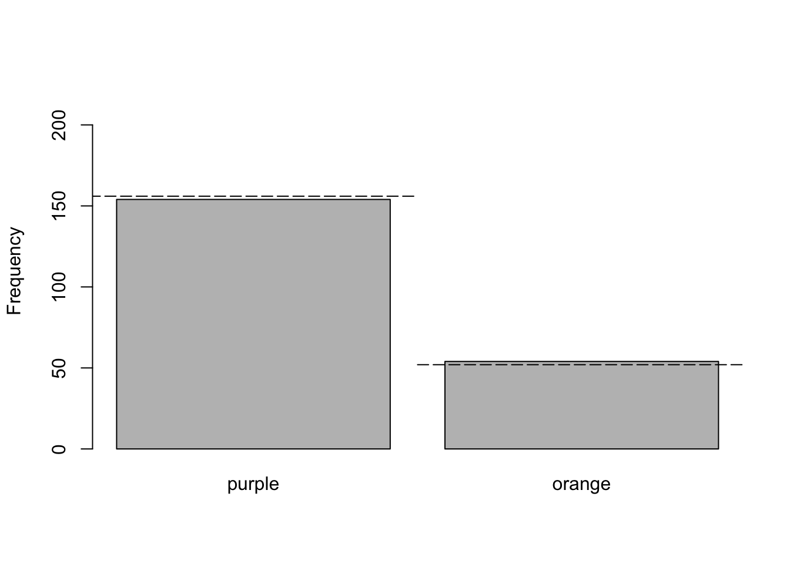

The chi-squared goodness-of-fit test is used to test whether observed frequencies differ from expected frequencies. This statistical test is used when there are 2 or more categories for a categorical variable.
The chi-squared goodness-of-fit test allows researchers to determine whether samples from a population are likely, given the expected true proportions (which are converted to expected frequencies). The statistical hypotheses are:
Often researchers test the null hypothesis that the true proportions of each group are all equal, but you can use true proportions that are not equal (as long as they all add to 1.0).
The data are often entered in one of two forms. The first is just the category corresponding to each observation. In Excel, you would record each observation in a different row of a column. In R you can record the data with the function c().
chisq.data <- c("red", "blue", "red", "red", "orange", "blue", "red", "orange")The second form is more compact, and is easy to enter into R or calculate from the above form.
(chisq.data2 <- c(red = 4, blue = 2, orange = 2))## red blue orange
## 4 2 2(chisq.data3 <- table(chisq.data)) #Coverts the long form to the compact form## chisq.data
## blue orange red
## 2 2 4The function table() calculates the frequencies for each category in the vector.
A common intertidal sea star has two general color morphs, and the authors (Harley et al 2006) collected data on the relative abundance of different color morphs of a common intertidal sea star. We will use their data to answer whether their data support the hypothesis that color is control by a single locus, two-allele dominant model. Specifically they wanted to test whether the proportions of the two colors morphs were consistent with a 3:1 ratio. Recall that a 3:1 phenotypic ratio is expected for a single locus with two alleles, in which one of the alleles is dominant over the other. Given that sea stars are diploid, that means that there are 4 possible combinations (but only three different genotypes, and only two phenotypes): stars can have two copies of the dominant allele (one from mom and one from dad), one of each allele (either the dominant from mom and the recessive from dad, or the dominant from dad and the recessive from mom), or two copies of the recessive allele (one from mom and one from dad).
Purple stars are more numerous than orange stars, and so the authors hypothesized that the allele that results in the purple color is dominant, and the allele that codes for the orange color is recessive. The data they collected at Strawberry Hill, a site in Oregon, were 154 purple and 54 orange.
obs.freqs <- c(purple = 154, orange = 54)The test statistic for the chi-squared goodness-of-fit is called the chi-squared value. It is calculated with the following equation. This test statistic just indicates how different the observed frequencies are from the expected frequencies.
\[ \chi^2 = \Sigma_{i=1}^{g} \frac{(O_i-E_i)^2}{E_i} \]
, where O are the observed values, E are the expected values, and g is the number of groups.
You must use frequencies with this test statistic, not proportions or probablities. Remember it is easy to convert proportions and probablities to frequencies (n x p).
So, what are the expected values? Well, the authors expected a 3:1 ratio, or a proportion of 0.75 of purple stars and a proportion of 0.25 orange stars. To convert these values to frequencies, we just multiple each value by the total number of stars that authors sampled.
exp.props <- c(purple = 0.75, orange = 0.25)
(exp.freqs <- sum(obs.freqs)*exp.props)## purple orange
## 156 52You can now calculate the chi-squared value.
(chisq.val <- sum(((obs.freqs - exp.freqs)^2)/exp.freqs))## [1] 0.1025641The null probability distribution appropriate for a chi-squared goodness-of-fit test is the chi-squared probability distribution, which is a continuous distribution. The parameter to describe the shape of this distribution is the degrees of freedom. The null distribution is therefore the chi-squared distribution with the correct degrees of freedom for your data, and it tells you the probability of &ge chi-squared test statistic given that the null statistical hypothesis is true.
All tests that use the chi-squared distribution are 1-tailed test, but 2-sided. In other words, we look up the P-value on the right tail of the distribution only, but the alternative hypothesis is stated as not the null (i.e., greater than or less than the null). Let’s first plot the PDF for the chi-squared distribution with different degrees of freedom, starting with 1 degree of freedom (typically the situation when you only have 2 groups). Then change the degrees of freedom and see how the shape changes.
curve(dchisq(x, df = 1), 0, 20, ylab = "Density")
#Now change the degrees of freddom
curve(dchisq(x, df = 2), add = T, col = "steelblue")
curve(dchisq(x, df = 3), add = T, col = "steelblue1")
In our example, we will use chi-squared distribution with 1 degree of freedom as the null distribution. So, let’s plot that distribution again and plot our chi-squared value and our critical value, which is the chi-squared value that corresponds to a probability of alpha = 0.05 (i.e., the chi-squared value in which 5% of the area is under the right tail).
curve(dchisq(x, df = 1), 0, 20, ylab = "Density")
#Add chi-squared value to graph
abline(v = chisq.val, col = "firebrick4")
text(chisq.val, 0.1, "Test stat", pos = 4, col = "firebrick4")
#Add critical value to graph
abline(v = qchisq(0.95, df = 1), col = "steelblue")
text(qchisq(0.95, df = 1), 0.8, "Critical value", pos = 4, col = "steelblue")
The P-value is easily calculated from the CDF of the Chi-squared distribution.
#Remember you want the right tail!
1- pchisq(chisq.val, df = 1)## [1] 0.748774Is this value greater or less than your alpha value? What do you conclude?
Now let’s get R to do all the work for us. Look at the help file for the function chisq.test(). There are several arguments that are important to understand. Notice the argument correct. By default, R uses the Yates correction. In our example, we have a large sample size and thus don’t want to use it. The argument p allows us to change the expected probabilities for each group. In this case, we predicted that purple star have a probability of 0.75 and the orange has a probability of 0.25. So, we don’t want to use the default values, which are equal change for each group. The other arguments are not too important, but ask if you are interested in what they do.
chisq.test(obs.freqs, p = exp.props, correct = F)##
## Chi-squared test for given probabilities
##
## data: obs.freqs
## X-squared = 0.10256, df = 1, p-value = 0.7488Did you get the same answer as above? You should have.
We discussed in class the information to include in a manuscript. So, look over the Powerpoint slides.
A bargraph is commonly used to display the data analyzed with a Chi-squared goodness-of-fit test. Below is the graph appropriate for the sea star example.
xVals <- barplot(obs.freqs, ylim = c(0, 220), ylab = "Frequency")
#xVals now have the center of each bar
xVals## [,1]
## [1,] 0.7
## [2,] 1.9#I now play around with the values to get the lines right
lines(c(xVals[1]-0.6, xVals[1]+0.6), rep(exp.freqs[1], 2), lty = 5)
lines(c(xVals[2]-0.6, xVals[2]+0.6), rep(exp.freqs[2], 2), lty = 5)
That is it. You now should be able to analyze data with a chi-squared goodness-of-fit test.